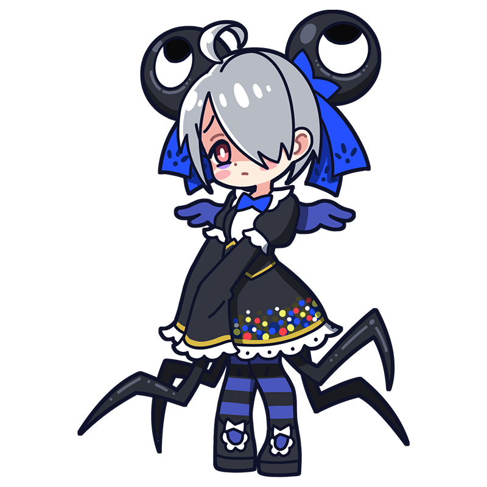

あうぅ。私なんて、隅っこで
うじうじしてればいいんです……。
ルドン
大きな瞳を閉じてごらん
まぶたの裏には色彩が映る
象徴主義を代表するフランスのミューズ。気弱な性格で作品も黒く鬱々としがちだが、心の内にはどんな絵画にも負けない幻想的な色彩が眠っている。スカートから生える虫の足はルドンの意思に関係なく動く。
様式
象徴主義
出身国
フランス王国
代表作
"キュクロプス"
"眼＝気球"
"瞳を閉じて" etc.
ルドンといえばこの一枚！
キュクロプス
ギリシャ神話の水の妖精ガラテアと、彼女に恋をしてしまった１つ目の巨人・ポリュペーモスを描いた作品。本来は大変な暴れん坊であるポリュペーモスだが、この絵の描写からは内気な印象を感じる。その姿には、生後すぐに里子に出され、孤独な少年期を過ごしたルドン自身を重ねずにはいられまい。
制作年
1914年頃
技法・材質
油彩、キャンバス
寸法
64 cm x 51 cm
所蔵
クレラー・ミュラー美術館
（オランダ）
作品画像出典: https://publicdomainq.net/odilon-redon-0020813/
ルドンってどんな芸術家？
オディロン・ルドン
19世紀フランス象徴主義を代表する、夢とうつつのはざまを彷徨う画家。真っ暗な背景に浮かび上がる謎めいた生物を描いた初期の版画は「不気味」の一言で、一度見たら忘れられないだろう。ところが後年になると一転、画面には鮮やかな色彩があふれるようになり、題材も幻想的な人物像へと移っていく。心象を映し出すような作風から象徴主義の中心的存在となり、後のシュルレアリストを始めとする幻想作家に多大な影響を与えた。
フルネーム
Bertrand-Jean Redon
誕生
1840年4月22日
死没
1916年7月6日(76歳没)